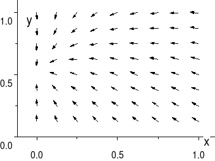
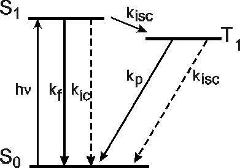
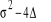
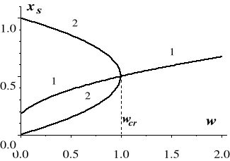
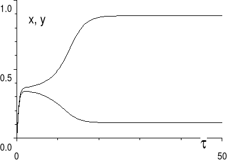
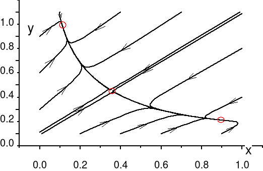
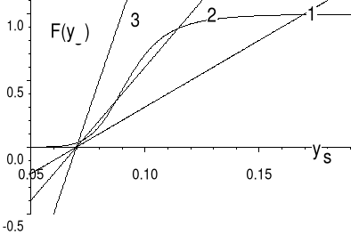
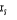
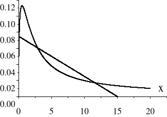
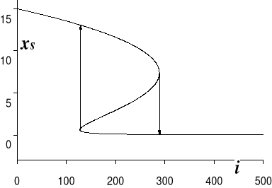

3. Application of the theory. Analysis of singular points
3.1 Scheme for carrying out a qualitative analysis of a chemical process
The experimental examples and theoretical information given above show that the analysis of a particular scheme of a chemical process can be broken down into the following stages.
The construction of a physical model of the process. This stage consists in choosing those elementary processes and interactions that describe in an adequate way the results observed in the experiment.
The construction of a mathematical model of the process. In the course of this stage it is necessary to choose the essential variables of the process under study and to write down the equations describing the evolution in time of these variables. To reduce the number of variables, the material and energy balance equations must be used wherever possible. In a large proportion of cases, in order to simplify the resulting mathematical model, one has to neglect some features of the process or to assume that the process is carried out under specific conditions.
Reducing to dimensionless variables the system of equations obtained in the course of the construction of the mathematical model. This stage is optional in the case of simple systems. However, it almost always leads to a reduction in the number of parameters of the model (the number of coefficients entering the equations).
Finding the steady states. In the course of this stage one finds the values of the variables at which the system under study does not change in time. Important is the answer to the question: how many steady states are possible in the given system?
Obtaining the matrix of coefficients of the linearised system of equations (in accordance with formula (2.6)).
Obtaining the coefficients and of the characteristic equation for each of the singular points.σΔ
An analysis of the coefficients and and of their signs depending on the parameters of the original equations. Determining the type of the singular points in accordance with Fig. 2.8.σΔ
Determining the dependence of the type of each singular point on the magnitudes of the parameters of the system. Finding the domains of parameters corresponding to different kinds of kinetic behaviour of the system.
Let us apply this scheme to the analysis of particular kinetic schemes.
3.2 Qualitative analysis of a linear system. Stable node
Consider the following reaction scheme, proceeding in an isothermal reactor closed with respect to matter:
Such a reaction scheme corresponds, for example, to the hydrolysis of a carboxylic acid anhydride with the formation of an acid that exists in two forms — protonated and deprotonated.
As the variables we shall choose the concentrations of the substances participating in the reaction. Let us write the kinetic equations:
where A, B, C are the concentrations of the substances, , and are the rate constants of the reactions indicated in the scheme. Let us reduce the number of equations in system using the closedness of the reactor with respect to matter. Let us substitute the material balance condition into system and obtain a system of two equations:
Let us reduce the system of equations to dimensionless form. For this purpose, let us divide both equations by the quantity N0 and introduce the new variables x = A/N0 and y = B/N0. Effectively, in this transformation the quantity N0 is chosen as the unit of measurement of the concentrations. In the new variables the system of equations transforms to the form:
As the unit of measurement of time let us choose, for example, the characteristic time of the course of the third reaction . For this purpose, let us divide both equations in the system of equations by and introduce the notation:
— dimensionless time;
— dimensionless parameters.
The system of equations will take the form:
Let us note that in the original system of equations there were four parameters — N0, , and . In dimensionless form the system of equations contains only two parameters — and . Let us also note that in the introduction of dimensionless variables there is a certain arbitrariness. Indeed, to obtain the dimensionless time one could have used the characteristic time of some other reaction, for example, αβ. The choice of the system of dimensionless variables should be treated attentively, since upon the use of different dimensionless variables the number of dimensionless parameters in the system of differential equations may turn out to be different.
At this point we have completed the third stage in the scheme of qualitative analysis given in the previous section.
Let us now find the steady states (singular points) of the system of equations. For this purpose, we set the right-hand sides of the equations equal to zero and obtain a system of algebraic equations:
The system of equations has a unique solution
which testifies to the uniqueness of the steady state.
To find out the stability of this state, let us obtain the matrix of coefficients of the linearised system of differential equations:
From matrix let us obtain the coefficients of the characteristic equation:
Taking into account that the parameters and are non-negative by definition, from expressions αβ we conclude that the coefficients and are positive. The quantity σΔ
can be easily transformed to the form
which shows that . In accordance with Fig. 2.8 it can be concluded that the singular point is a stable node.

Thus, the analysis carried out has shown that a single stable steady state is realised in the system under consideration. The vector diagram for the system under consideration, given in Fig. 3.1, illustrates this conclusion vividly.
If one takes into account the closedness of the system with respect to matter and energy, it becomes obvious that the unique steady state in the system under consideration corresponds to thermodynamic equilibrium.
3.3 Qualitative analysis of a linear system. Stable focus.
Consider the following reaction scheme, proceeding in an isothermal reactor closed with respect to matter:
In reality such a reaction scheme corresponds, for example, to the process of light absorption and deactivation of the excited states of the molecule that are formed (Fig. 3.2).

The system of kinetic equations corresponding to this reaction scheme, with account taken of the material balance condition, has the form:
where
Let us introduce, in a similar way to what was done in Section 3.2, dimensionless variables:
The system of kinetic equations will take the form:
Setting the right-hand sides of equations equal to zero, we obtain the coordinates of the singular point:
The matrix of linear coefficients for the system of equations has the form
From matrix we obtain the coefficients of the characteristic equation
,
which are obviously positive. Thus, we conclude that the unique singular point obtained is stable.

We shall determine the type of the singular point by analysing the sign of the expression:
The value of this expression as a function of and is shown in Fig. 3.3.αβ
It can be seen from Fig. 3.3 that the quantity may be either positive or negative depending on the ratios of the constants and . Using the diagram in Fig. 2.8, we conclude that, depending on the ratio of the constants, the singular point in the dynamical system under consideration may be either a stable node or a stable focus. This means that the kinetic process of the approach of the system to the steady state under the corresponding conditions is damped oscillations.αβ
The examples given above correspond to schemes for which solutions of the kinetic equations can be obtained in explicit form by virtue of their linearity. More interesting are the cases of kinetic behaviour that, as was said earlier, appear in the case of nonlinear equations. Let us consider some of these cases.
3.4 Bistability in a flow reactor. Breaking of chiral symmetry
Consider a continuously stirred tank flow reactor. Let a racemic mixture of substance A enter the reactor at a constant rate, that is, a mixture consisting of equal amounts of the dextrorotatory and levorotatory optically active enantiomers of the substance — AL and AD. Let us assume that the enantiomers of substance A enter into chemical transformations according to the following scheme:
This scheme assumes that both enantiomers react with the substrate S to form a second molecule of the same enantiomer. In abbreviated form, this reaction describes the autocatalytic stage of multiplication of each enantiomer. The last reaction in the scheme shows the mutual disappearance of the enantiomers with the formation of optically inactive (achiral) products. Let us note that all the stages of the scheme given are symmetric with respect to the enantiomers, that is, at first sight the reaction scheme given cannot lead to a different content of the enantiomers in the mixture. However, this scheme describes in explicit form a reaction proceeding in an open system, that is, in a system that is in a flow of matter.
Let us write the kinetic equations corresponding to the scheme given:
It can be seen that the kinetic equations describing the changes in the concentrations of the enantiomers are essentially nonlinear.
To reduce the system of equations to dimensionless form, let us introduce the dimensionless time :
Let us multiply both equations by the coefficient and obtain a dimensionless system of equations:
where are the dimensionless concentrations of the enantiomers, are dimensionless parameters.
We shall consider the situation in which . The steady states of the dynamical system under consideration are found by setting the right-hand sides of the equations in equal to zero:
Subtracting the equations in system from each other, we obtain an equation that is easily reduced to the form:
From it is obvious that there exist steady states corresponding to the following cases:
Substituting conditions and into one of the equations of system , we obtain explicitly the concentrations of the enantiomers in the steady states. To condition there corresponds the solution
The condition of non-negativity of the concentration xs implies that only the sign in front of the square root in solution . Thus, the symmetric solution corresponding to condition has the following form:
To condition there corresponds the asymmetric solution:
The requirement that the concentration values be real numbers means the positivity of the expression under the square root in solution . This condition determines the domain of existence of the asymmetric solution:
Let us now determine the stability of the steady points obtained. The matrix of linear coefficients for the system of equations has the form
The coefficients of the characteristic equation
Substituting into expressions the condition and the solution , we obtain:
The coefficients show that the asymmetric solution is stable in the whole domain of its existence . Substituting into the solution , one can show that in this domain the symmetric solution becomes unstable.
Fig. 3.4 shows the dependence of the concentration of the enantiomers on the magnitude of the dimensionless parameter w.

It can be seen from Fig. 3.4 that when the magnitude of the dimensionless parameter w is less than the critical value , the symmetric state of the system with equal concentrations of the optically active enantiomers becomes unstable, and two new states appear with a predominance of one of the enantiomers. Thus, a nonlinear chemical scheme in an open system easily explains the predominance of one of the enantiomers characteristic of living organisms, that is, it demonstrates sufficiently non-trivial kinetic regularities.
To be convinced of the correctness of the conclusions obtained, let us find a numerical solution of the system of equations in the bistability domain (Fig. 3.5).

The phase portrait of the dynamical system under consideration is presented in Fig. 3.6. This figure illustrates the conclusion obtained by us above about the existence in the analysed system of a saddle singular point separating two stable singular points corresponding to the asymmetric steady state.

3.5 Thermokinetic bistability
Consider the acid–base equilibrium of o-cresolphthalein
,
which is established in a buffer solution located in a reactor closed with respect to matter. Let the solution be stirred efficiently, and the temperature of the reactor walls be maintained constant and equal to T0. Let us irradiate the solution with light that is absorbed only by the ionic (coloured) form of o-cresolphthalein. The absorbed light produces no chemical action, but its energy dissipates into heat, which changes the temperature of the solution. Let us take into account that the dissociation reaction is endothermic, and let us denote the positive enthalpy of the forward reaction by H. Then the system of kinetic equations for this dynamical system will look as follows:Δ
In system of equations the following notation is used:
is the concentration of o-cresolphthalein in the ionic form;
is the initial (total) concentration of o-cresolphthalein;
P is the power of the irradiating light; l is the optical path length;
ε is the absorption coefficient of o-cresolphthalein in the ionic form;
λ is the heat transfer coefficient through the reactor walls;
C, V are the heat capacity and the volume of the reactor, respectively.
The first term on the right-hand side of the first equation in system describes the forward dissociation reaction of o-cresolphthalein. In doing so, it has been taken into account that for simple dissociation processes the activation energy of the process is close to the enthalpy of the reaction. The second term of this equation describes the reverse reaction involving hydrogen ions, whose concentration in a buffer solution is constant.
The first term on the right-hand side of the second equation describes the absorption of light by the solution. In accordance with the law of light absorption, this term should have contained the factor
.
However, to simplify the system of equations, let us assume that the optical density of the solution is a small quantity at any moment of time. This can always be achieved in an experiment by decreasing the concentration of the dye or the optical path length of the solution. In such a case the exponential in the factor can be expanded into a series, keeping the first two terms.
The second term on the right-hand side of the second equation describes the loss of heat by the reactor due to heat conduction through the walls. The third term takes into account the change in temperature due to the thermal effect of the reaction.
Let us reduce equations to dimensionless form using the following notation:
Equations will take the form:
Let us note that in equation the coefficients , and in dimensionless form reflect the pH of the buffer, the intensity of irradiation and the efficiency of heat losses through the walls, respectively. All these coefficients are positive and can be varied in an experiment independently of one another. αβγ
To find the singular points, let us set the right-hand sides of equations equal to zero. Taking into account that, from the second equation we obtain the relation . Substituting this relation into the first equation of the system, after transformations we have:
Equation determines the coordinates of the singular points (ys and, consequently, xs). However, they cannot be determined in analytical form, since the equation is transcendental. Let us represent the right-hand and left-hand sides of equation graphically (Fig. 3.7).

It can be seen from Fig. 3.7 that, depending on the magnitudes of the parameters, equation has either one or three solutions. To determine the stability of the singular points corresponding to these solutions, let us determine the matrix of linear coefficients:
From matrix let us obtain the coefficients of the characteristic equation:
It can be seen from the expressions obtained that the coefficient is always positive, while the sign of the coefficient is not determined. To find out the stability of the singular points, let us determine their coordinates by a numerical solution of equation σΔ and substitute them into expressions . By this method we obtain that the coordinates xs = 0.9927; ys = 0.1693 correspond to line 1 in Fig. 3.7, and this singular point is stable ( > 0). To line 3 in the figure there also corresponds a stable singular point with the coordinates xs = 0.0347; ys = 0.0707. Line 2 in Fig. 3.7 demonstrates three singular points, two of which are stable (xs = 0.8893; ys = 0.1145 and xs = 0.0474; ys = 0.0723), while the third (xs = 0.346; ys = 0.0873) is characterised by a negative coefficient . Thus, to line 3 there correspond the existence of two stable steady states of the system, separated by a saddle point.ΔΔ
The result obtained is easy to understand qualitatively if one takes into account that the right-hand side of equation describes the heat expenditure due to heat conduction through the reactor walls, while the left-hand side describes the heat supply owing to the absorption of radiation. Then in Fig. 3.7 (line 2) the left singular point corresponds to the low-temperature steady state of the reactor, in which the dye is in a form that does not absorb radiation. The right singular point reflects the high-temperature steady state with a large heat supply owing to the absorption of radiation by the dye in the coloured form.

To determine the domain of existence of bistable solutions, let us construct the dependence of the concentration of the ionised form of the dye (in dimensionless form — ) on the intensity of irradiation (in dimensionless form — the coefficient ). It can be seen in Fig. 3.8 that there is a lower and an upper critical value of the radiation power, between which there exist two stable steady states, that is, bistability of the system manifests itself. To pass from the lower branch of the dependence to the upper one (from the low-temperature to the high-temperature steady state), it is necessary to increase the radiation power up to the critical value . The reverse transition from the upper branch of the dependence to the lower one is possible at the critical point .
Thus, upon a change of the external conditions the system under consideration demonstrates hysteresis — a difference in behaviour upon increasing and decreasing the control parameter. Such hysteresis phenomena are characteristic of bistable systems and can serve as a criterion for their experimental detection.
3.6 Photochemical bistability
Consider a thermally reversible photochemical reaction proceeding in a closed isothermal reactor in accordance with scheme
The first reaction in this scheme describes the transformation of substance A into substance B, proceeding upon the absorption of light, and the reverse thermal transformation with rate constant k.
The second reaction in scheme shows the process of concentration quenching of the excited states of substance A. Concentration quenching is the following set of stages:
where is the total rate constant of monomolecular non-radiative processes (internal conversion, fluorescence, and the like); is the rate constant of bimolecular quenching upon collision of an excited molecule with a molecule of the same substance in the ground state.
All the processes indicated in scheme are fast. In this connection, the quasi-steady-state approximation can be used to take them into account. For this purpose, let us write the kinetic equation for the change with time of the concentration of molecules in the excited state:
where V is the volume of the solution;
Ia is the intensity of the light absorbed by the solution, which is determined by the formula:
where: is the intensity of the light incident on the sample; D is the absorption of light (optical density) of the solution, which is the sum of the absorptions of all the components of the solution:
where is the natural (Napierian) absorption coefficient of light by the corresponding substance; l is the optical path length.ε
Setting equation equal to zero, we obtain the value of the concentration of the excited states:
Taking into account, the rate of the photochemical transformation can be written as:
Then the quantum yield of the reaction can be calculated by the formula:
Taking into account relations , , and assuming that the light is absorbed only by the initial substance A, let us write the kinetic equation for the concentration of the initial substance in the reactor:
Let us reduce the equation to dimensionless form using the following notation:
We obtain equation
Let us set the right-hand side of equation equal to zero to find the singular points:
Let us solve the resulting equality. The right-hand and left-hand sides of equality are plotted in Fig. 3.9.

It can be seen that, depending on the magnitudes of the parameters i, α and x0, one or three solutions of equation , and accordingly steady states, are possible. To determine their stability it is sufficient to take the derivative of the right-hand side of equation — — and to determine its sign at the xs corresponding to the singular points. In this way one can verify that the extreme singular points in Fig. 3.9 are stable, while the middle one is unstable.
The dependence of the coordinates of the singular points on the irradiation intensity i is shown in Fig. 3.10. In this dependence a hysteresis loop characteristic of bistable systems is observed.

The examples given in Sections 3.4 – 3.6 illustrate the three most frequently encountered kinds of nonlinearity of chemical systems:
— nonlinearity connected with the kinetic order of the reaction and with the course of the reaction in a system with mass exchange;
— thermokinetic nonlinearity caused by the Arrhenius dependence of the rate constant and by non-isothermal conditions of the course of the reaction, and
— photochemical nonlinearity caused by the nonlinear laws of light absorption.
It should be noted that in all the examples given of non-trivial behaviour in the system one can identify a feedback, which is either autoacceleration or autodeceleration of the reaction.
Problems
1. Write down the system of kinetic equations and qualitatively analyse the behaviour of the dynamical system that is a solution of a coloured substance located in a solution under the action of light (the scheme of elementary processes is shown in Fig. 3.2), assuming a small optical density of the solution and constancy of the temperature.
2. Find the stability domain of the symmetric solution of the problem of the Frank scheme (Section 3.4).
3. Let a solution contain three light-absorbing substances A, B and C with different concentrations and different molar absorption coefficients. Determine what fraction of the light incident on the solution is absorbed by each of these substances.
4. Find the number of steady states (the number of singular points) for the photochemical reaction proceeding in a closed isothermal reactor in accordance with the following scheme:
assuming that the substances A and B absorb the light. Analyse the stability of the singular points.
5. Find the number of steady states (and determine their stability) for the reversible reaction proceeding in a non-isothermal closed reactor:
under the condition that the reactor is irradiated with light that is absorbed only by substance A, the enthalpy of the reaction being H. Determine the conditions of existence of solutions of different types.Δ
6. Determine whether bistability can be observed upon irradiation with light of a gas in which the dimer–monomer equilibrium NO2 is observed.